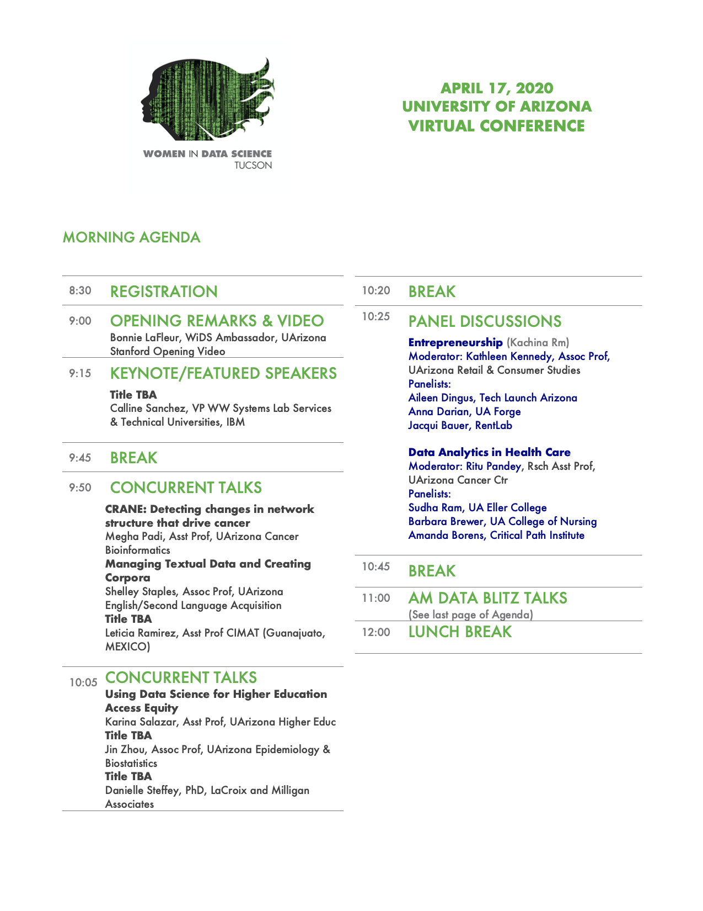

Agenda


The Global WiDS Conference aims to inspire and educate data scientists worldwide, regardless of gender, and to support women in the field. This one-day technical conference provides an opportunity to hear about the latest data science related research and applications in a number of domains, and connect with others in the field.
WiDS Tucson is an independent event organized by the University of Arizona to coincide with the annual Global Women in Data Science (WiDS) Conference held at Stanford University and an estimated 150+ locations worldwide. All genders are invited to attend WiDS regional events, which features outstanding women doing outstanding work.
This Tucson WIDS meeting aims to further build the community around women in Data Science. The meeting provides a forum for women to share technical information about their projects with each other, and community members; to explore innovative topics emerging in the software and data infrastructure communities; to discuss and learn about best practices across projects; and to stimulate new ideas of achieving software and data sustainability and new collaborations.
Women in the data science community are invited to present talks and posters on their projects. Anyone who is interested in attending the meeting is welcome and encouraged to do so. There is no registration fee, but participants need to register by the deadline to allow for planning logistics.
This meeting is virtual, and participants are encouraged to move from Zoom meeting to Zoom meeting to maximize their own experience.
| Your Thoughts | The organizing committee would like to hear your thoughts on future directions for WIDS events. Please email us at wids.tucson@gmail.com |
|---|
| Remote participation | Remote participation will be provided via Zoom. |
|---|---|
| Talks | Presentation information is available at the Talks page. |
| Posters | Detailed information regarding the posters is available at the Posters page. |
| Registration | Before April 15, 2020 |
|---|---|
| Register for a Poster or Data Blitz | April 3, 2020 |
| Upload Poster | April 14, 2020 |
| Upload Talk Slides | April 14, 2020 |
| Meeting Date | April 17, 2020 |
You are invited to register for the WiDS-Tucson conference. We especially need DataBlitz and poster presenters! Students, faculty, or other Data Scientists identifying as female are invited to apply to present their research in our DataBlitz (3 minute lightning talks) and/or poster sessions. Posters will be presented as powerpoint slides (limit 4 slides).
Registration form is here
To upload your talk slides and/or poster, please fill out this form.
Due to the COVID-19 Pandemic, the WIDS Tucson 2020 conference will be held virtually in Zoom. Zoom info here:
WiDS Tucson is a one-day technical conference that provides an opportunity to hear about the latest data science related research and applications in a number of domains and connect with others in the field. This event will feature speakers and panelists from the University of Arizona Data Science Community. While all are welcome to attend, in order to showcase and emphasize the data science work done by women at UA, presentations are restricted to women for this event.
You need to sign up for Data Blitz and Posters by April 3, 2020.
Registration form is here
The meeting this year will be virtual. We will use Figshare to share the posters digitally. Please follow these steps to upload your poster by April 14, 2020:
The size of your poster should be no bigger than 24 inches (60 cm) wide and 36 inches (90 cm) tall. A Powerpoint poster template is available here: WIDS Poster Template.pptx.
After you have uploaded your poster to Figshare, please use this form to fill in the URL pointing to your poster.
View WIDS Tucson meeting posters on Figshare


WiDS Tucson is a one-day technical conference that provides an opportunity to hear about the latest data science related research and applications in a number of domains and connect with others in the field. This event will feature speakers and panelists from the University of Arizona Data Science Community. While all are welcome to attend, in order to showcase and emphasize the data science work done by women at UA, presentations are restricted to women for this event.
Talks for the WIDS conference will consist of invited keynote talks and breakout session talks. All talks need to be submitted by April 14, 2020.
Each slide deck should include the following information:
A Powerpoint template is available here: WIDS Slide Template.pptx.
We will use Figshare to gather your slide PDF files. Once you have created your talk, please download the talk as a PDF and follow the instructions in the "Posters" page to upload a PDF of your slides to Figshare, but use the keyword "WIDS-Tucson-2020-Talk" as one of the chosen keywords. Your PDF will be shown during your alloted presentation time.
After you have uploaded your slides to Figshare, please use this form to fill in the URL pointing to your slide.
View 2020 WIDS Tucson meeting talk slides on Figshare
| Name | Organization | Poster | Talk |
|---|---|---|---|
| TBD | TBD | View | View |
University of Arizona, BIO5
Contact the organizers via email at wids.tucson dot gmail dot com.
The 2020 WIDS Meeting is an interactive environment for listening and considering new ideas from a diverse group, with respect for all participants without regard to gender, gender identity or expression, race, color, national or ethnic origin, religion or religious belief, age, marital status, sexual orientation, disabilities, veteran status, or any other aspect of how we identify ourselves. It is the policy of the WIDS Meeting that all participants will enjoy an environment free from all forms of discrimination, harassment, and retaliation.